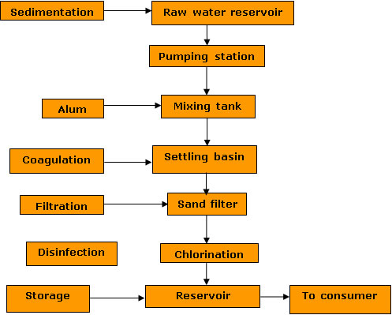
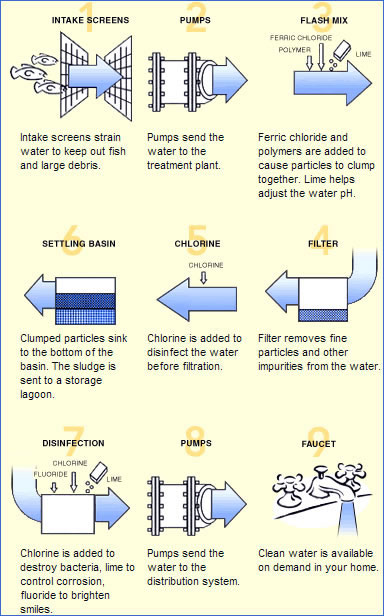
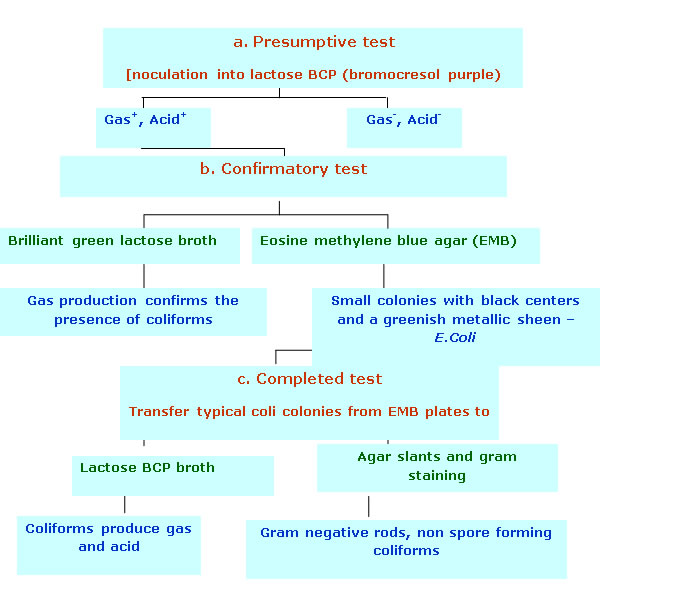
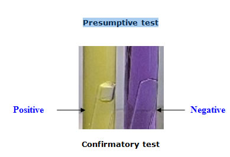
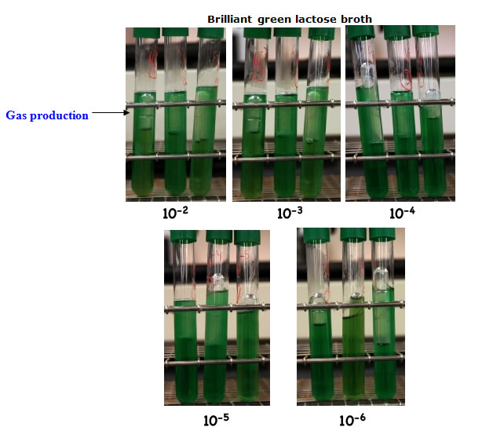
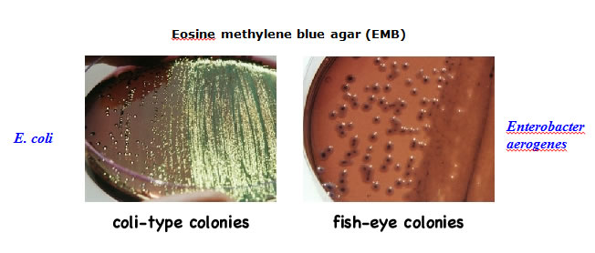

AMBE 101 :: Lecture 21 :: ENVIRONMENTAL MICROBIOLOGY

- Microbes are nature's decomposers. The variety of metabolic abilities in microbes is enormous, and includes microbes that can degrade or mitigate all sorts of human products and activities, from oil spills to pesticide runoff to toxic waste.
- Environmental Microbiology seeks to find ways to maximize the efficiency of microbes in helping to remove various kinds of wastes (e.g. sewage treatment), or to minimize the opportunities of microbes to produce problems (e.g. water treatment).
- Environmental Microbiology is a growing field, often brings together issues of concern to engineers, geologists and hydrologists, microbiologists, and public health officials.
Sewage Treatment
- Until 1900's, human wastes were simply dumped as raw sewage into the nearest outhouse, stream, or river. As connection of sewage to diseases such as cholera became clear, public policy changed to required water treatment. This had major impact on reduction of many diseases.
- Sewage = mix of domestic + industrial waste plus drainage water from rainfall. Contains many microbes, mostly harmless but some pathogens from humans or animals. Can include bacteria such as Vibrio cholera, Shigella dysenteriae, enteropathogenic strains of E. coli and B. cereus, viruses such as Hepatitis A, many more.
- Sewage treatment: goal is to get rid of pathogens, also reduce organic content of effluent to a low level.
- Primary wastewater treatment: use screens to remove large objects (plastic bags, wads of paper, etc.), then move water to large tank to allow settling of heavier particulate matter as sludge.
- Secondary wastewater treatment: modern facilities use "activated sludge process". After moving water from primary settling tank, bubble air through a secondary tank. Aerobic microbes grow and break down organic matter in the tank. Then move water to another tank called the secondary clarifier, where solids settle and are added to sludge. Clarified liquid is treated with chlorine to kill remaining microbes, then discharged as clear liquid into nearest river. Anaerobic bacteria break down organic matter, produce lots of fermentation products. Methanogens grow on these wastes and produce methane gas as waste. This can be trapped and used as fuel (useful in developing countries).
- Tertiary wastewater treatment: Secondary wastewater treatment does not remove inorganic ions, such as NH3, PO4-3, SO4-2. Wastewater can enrich local waters to create eutrophic conditions, including algal blooms and sufficient loss of oxygen that fish die. To prevent this, a few water treatment systems use additional steps to remove ammonia and phosphate, using additional processing tanks in which specific bacteria are used to remove ammonia and phosphate.
Bioremediation
- Expanded use of chemicals in industry has produced major new problems of environmental pollution. U.S. alone has over 50,000 hazardous waste sites. Entire communities have been evacuated because of accumulated toxic wastes. Groundwaters are often polluted as well, including toxic chemicals such as commercial solvents used to degrease machinery or in "dry cleaning". Fertilizers and pesticides are often found in water downstream from agriculture.
- Bioremediation = use of living organisms to promote destruction of environmental pollutants. See example of anaerobic toluene degrader .
- Typically, native microbes are used (rather than introduced or genetically mofified organisms). Rather than waiting for "nature to take its course", try to speed up the process. How?
- "Pump and treat". One way to speed bioremediation. Pump groundwater to surface, add nutrients (e.g., O2, methane), reinject into contaminated zone. In some cases, can inject
- Bioreactor. Another technique. Put contaminated soil or groundwater into an industrial-sized fermentor, add appropriate microbes to degrade materials, keep adding more substrate over time. This works well for very toxic chemicals such as chlorinated compounds (PCBs).
- Microbiology of water
Drinking water is obtained either from surface sources such as rivers, lakes or from underground water. Such natural waters are likely to be polluted with domestic and industrial wastes. Although water purification systems envisage protection from pollution, sometimes, the water supply can become a potential carrier of pathogenic organisms and endanger public health. A number of diseases such as cholera, typhoid, viral hepatitis etc., are known to be water borne. These pathogens are commonly transmitted through drinking water and cause infection of the intestinal tract. It is therefore, necessary to employ treatment facilities to purify water and to provide safe drinking water (Potable water).
Water that is free from diseases producing organism and chemical substances deleterious to health is called potable water
The main operations employed in water purification to produce potable water are: (i) sedimentation, (ii) filtration, and (iii) chlorination (fig 1). Sedimentation removes large particulate matter which settles at the bottomMost microorganisms are removed during coagulation with aluminium sulphate and sand filtration and subsequent treatment of water with chlorine (0.2 – 2 mg free chlorine per liter) will ensure its potability.
Fig. 1 Main Operation in drinking water purification

`
Microbiological Quality: Water can be perfectly clear in appearance and free from odour and taste and yet, be contaminated by microorganisms. Pathogenic organisms enter into water through sewage contamination or discharges from animals or humans into the reservoirs. The coliforms (E.coli and related organisms), Streptococcus faecalis and Clostridium perfringens which are normal inhabitants of the large intestine of animals and humans enter water supplies through faecal contamination. The presence of any of these bacterial species in water is evidence of sewage or faecal pollution. Techniques are available by which the presence of these specific groups can be easily identified. The routine bacteriological examination contains consists of (i) Plate count to determine the number of bacteria present, and (ii) biochemical test to reveal the presence of coliform bacteria since these are indicator organisms for fecal contamination. Figure 2 shows a general laboratory testing scheme for detection of cliform group of bacteria in water.
A variety of other bacteria and organisms which may not be serious pathogens including faecal streptococci, slime forming bacteria, Sulphur bacteria, algae etc. may also cause problems of odour, color and taste and it is essential that be eliminated from the drinking water.
Fig. 2 Laboratory tests for detecting contamination by coliforms

Presumptive test



| Download this lecture as PDF here |